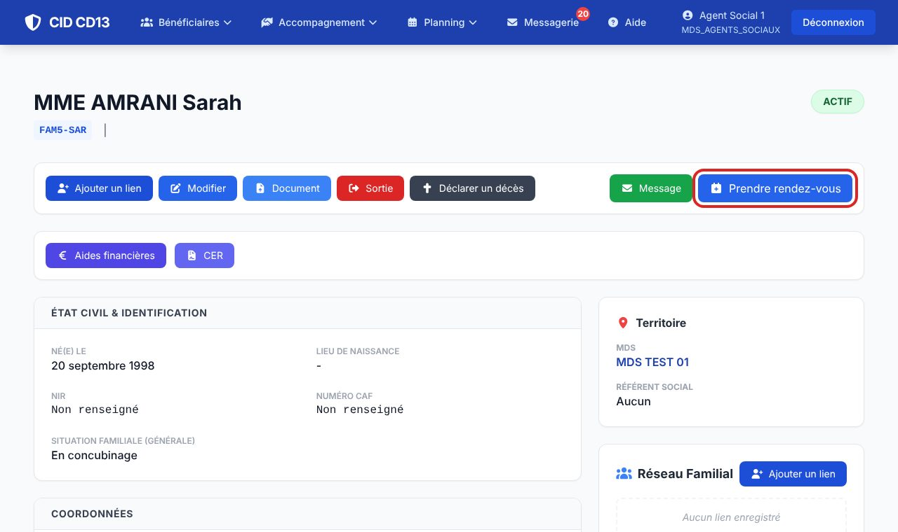
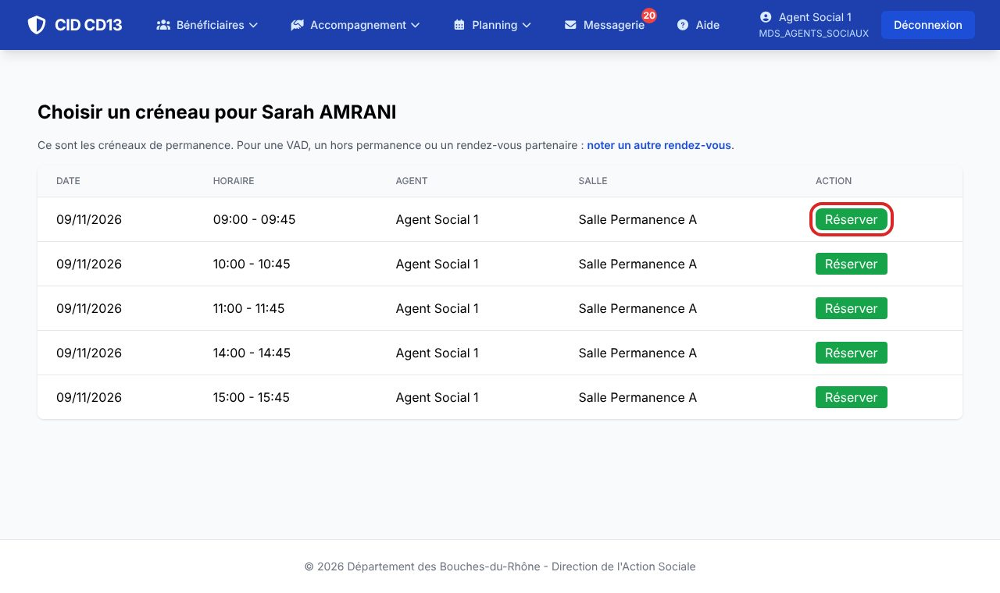
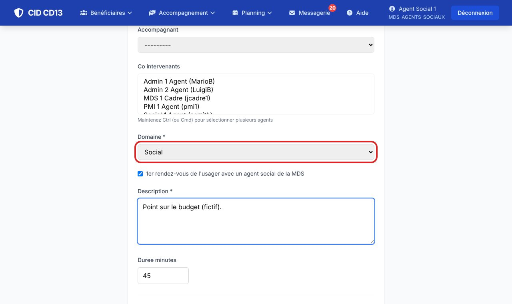
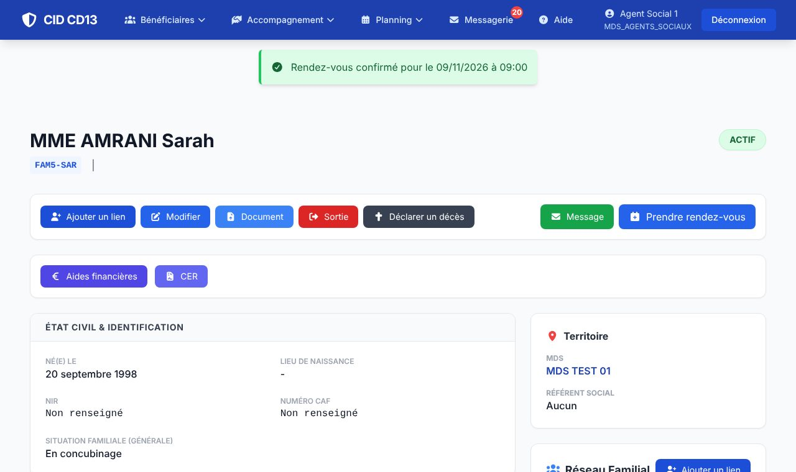
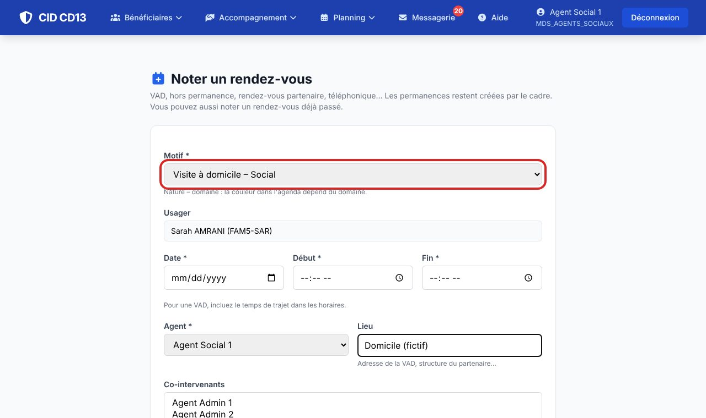

1Choisir un créneau de permanence


- Sur la fiche de l'usager, cliquez sur Prendre rendez-vous.
- CID liste les créneaux libres des permanences de sa MDS (de J+2 à J+17), ceux du référent en premier. Cliquez sur Réserver.
2Confirmer la réservation


- Indiquez le domaine, cochez 1er rendez-vous s'il y a lieu, décrivez l'objet du rendez-vous (co-intervenants et accompagnant possibles).
- Confirmer la réservation : le rendez-vous apparaît dans l'agenda.
3Noter un autre rendez-vous

- Pour une VAD ou un rendez-vous hors permanence : lien noter un autre rendez-vous (ou le bouton « 🏠 VAD, hors permanence… » de la fiche).
- Motif, date et heures, agent, lieu, co-intervenants et partenaires invités, puis Enregistrer le rendez-vous.
- Un partenaire invité peut recevoir une invitation (fichier agenda ou courriel).
Bon à savoir
- Dans l'agenda, un collègue ne voit que « Occupé » : jamais le motif ni le nom de l'usager.
Cliquez sur une image pour l'agrandir. Le cadre rouge montre où cliquer ou quoi remplir. Toutes les données affichées sont fictives.